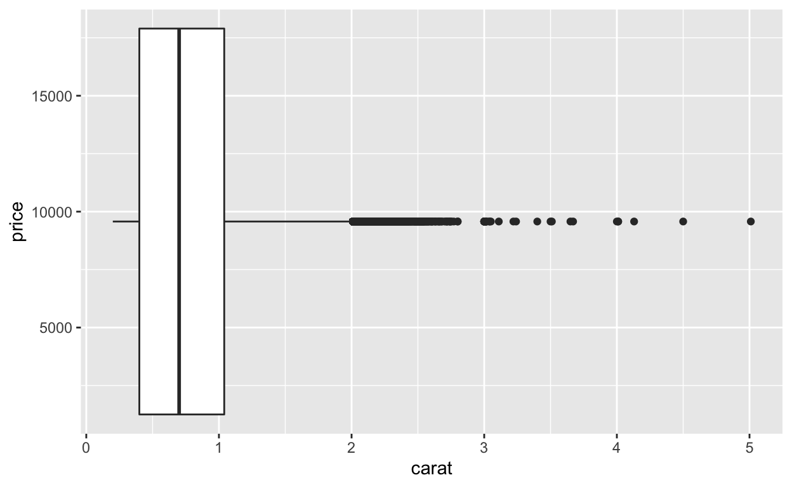
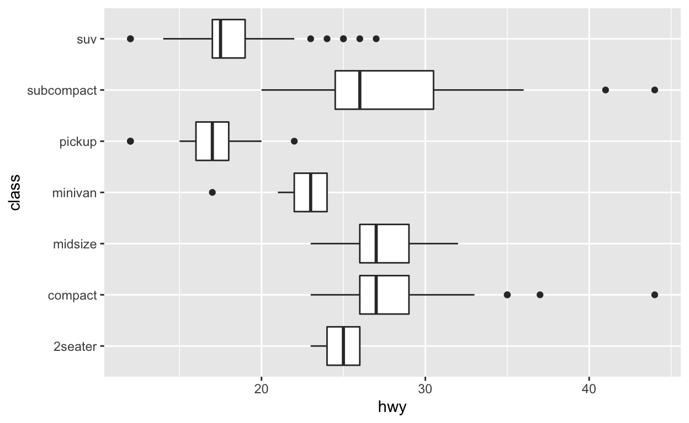
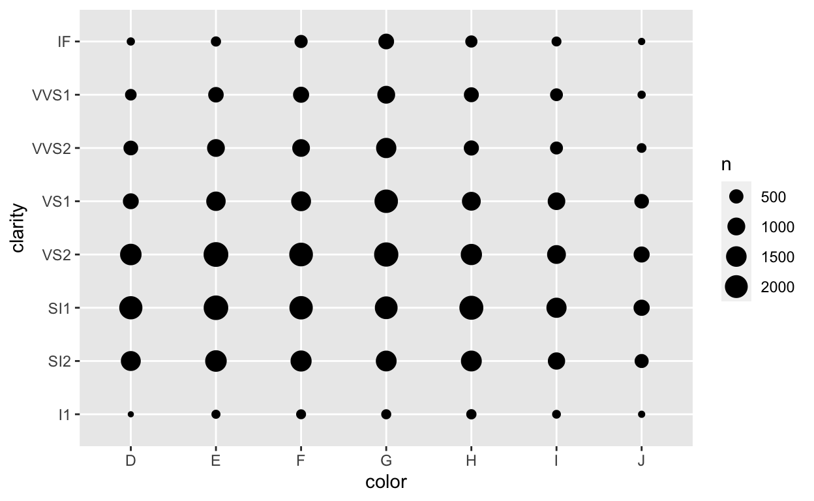
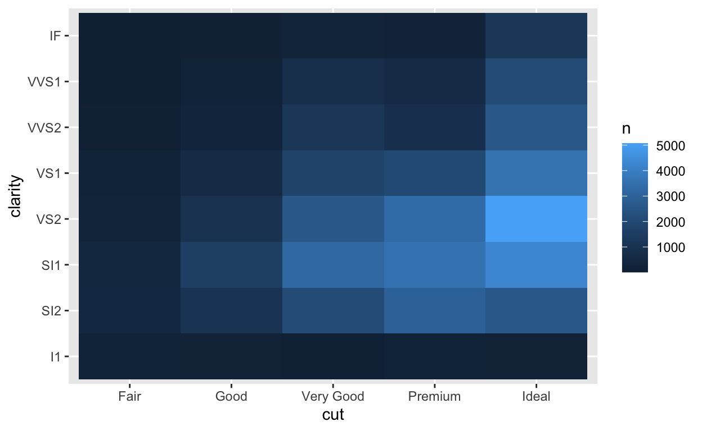
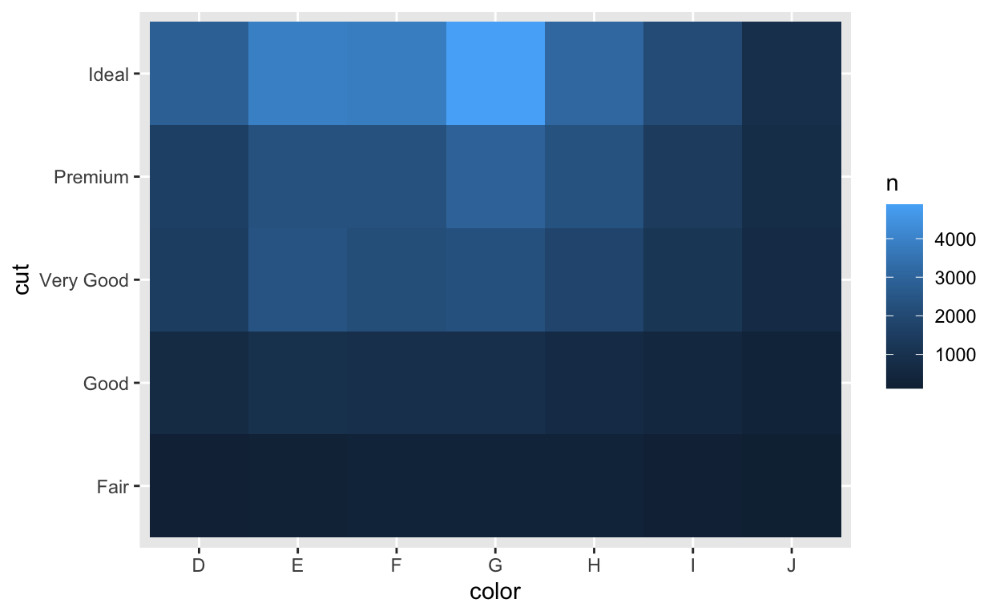

Bienvenue
Les boites à moustaches (ou boxplots en anglais) montrent la relation entre une variable continue et une variable catégorielle. Les graphiques de comptage (ou counts en anglais) affichent la relation entre deux variables catégorielles. Dans ce module, vous apprendrez à utiliser les deux. Vous apprendrez comment :
Créer et interpréter des boites à moustaches
Faire pivoter les boites à moustaches en inversant le système de coordonnées de votre graphique
Utiliser des diagrammes en violon et des graphiques de ressemblance, deux geoms qui sont similaires aux boxplots
Faire et interpréter les graphiques de comptage
Le module est adapté du livre R for Data Science de Hadley Wickham et Garrett Grolemund, publié par O’Reilly Media, Inc. 2016, ISBN : 9781491910399. Vous pouvez acheter le livre sur shop.oreilly.com.
Le module utilise les packages {ggplot2} et {dplyr}, qui ont été préchargés.
Boites a moustaches (boxplots)
Introduction
Exercice 1 - Boites à moustaches

Comment créer une boite à moustaches
Pour créer une boite à moustaches avec {ggplot2}, ajoutez geom_boxplot() au template {ggplot2}. Par exemple, le code ci-dessous utilise des boites à moustaches pour afficher la relation entre les variables class et hwy du jeu de données mpg, qui est fourni avec {ggplot2}.
ggplot(data = mpg) +
aes(x = class, y = hwy) +
geom_boxplot()Catégoriel et continu
geom_boxplot() s’attend à ce que l’axe \(y\) soit continu, mais accepte des variables catégorielles sur l’axe \(x\). Par exemple, ici class est une variable catégorielle. geom_boxplot() va automatiquement tracer une boite à moustaches séparée pour chaque valeur de \(x\). Cela permet de comparer les distributions des points avec différentes valeurs de \(x\).

Exercice 2 - Interprétation

Exercice 3 - Créer une boite à moustaches
Recréez la boite à moustaches ci-dessous avec le jeu de données diamonds.

ggplot(data = diamonds) +
aes(x = cut, y = price) +
geom_boxplot()"Combien de valeurs aberrantes (outliers) apparaissent dans le graphique ? Pour de gros jeu de données il peut y en avoir beaucoup trop. Voyons comment supprimer l'affichage des valeurs aberrantes dans votre graphique."Outliers
Vous pouvez modifier l’aspect des valeurs aberrantes dans votre boite à moustaches avec les paramètres outlier.color, outlier.fill, outlier.shape, outlier.size, outlier.stroke, et outlier.alpha (le paramètre outlier.shape prend un nombre de 1 à 25).
Malheureusement, vous ne pouvez pas dire à geom_boxplot() d’ignorer complètement les valeurs aberrantes, mais vous pouvez faire disparaître les valeurs aberrantes en fixant outlier.alpha = 0. Essayez-le dans le graphique ci-dessous.
ggplot(data = diamonds) +
aes(x = cut, y = price) +
geom_boxplot(outlier.shape = 24,
outlier.fill = "white",
outlier.stroke = 0.25)ggplot(data = diamonds) +
aes(x = cut, y = price) +
geom_boxplot(outlier.alpha = 0)Paramètres esthétiques
Les boites à moustaches reconnaissent les paramètres esthétiques suivants : alpha, color, fill, group, linetype, shape, size, et weight.
Parmi ces éléments, group est peut-être le plus couramment utilisé. Examinez le graphique ci-dessous. Il utilise une variable continue sur l’axe \(x\). En conséquence, geom_boxplot() n’est pas sûr de savoir comment diviser les données en catégories : il regroupe toutes les données dans un seul boxplot. Le résultat révèle peu de choses sur la relation entre le carat et le prix.

Dans les prochaines sections, nous utiliserons group pour construire un graphique plus instructif.
Comment “couper” une variable continue
{ggplot2} propose trois fonctions d’aide que vous pouvez utiliser pour diviser une variable continue en catégories. Chacune prend un vecteur continu et renvoie un vecteur catégoriel qui assigne chaque valeur à une classe. Par exemple, cut_interval() découpe un vecteur en n classes de longueur égale.
continuous_vector <- c(1, 2, 3, 4, 5, 6, 7, 8, 9, 10)
continuous_vector## [1] 1 2 3 4 5 6 7 8 9 10cut_interval(continuous_vector, n = 3)## [1] [1,4] [1,4] [1,4] [1,4] (4,7] (4,7] (4,7] (7,10] (7,10] (7,10]
## Levels: [1,4] (4,7] (7,10]Les fonctions cut
Les trois fonctions cut sont
cut_interval()qui construitnclasses avec une étendue égalecut_number()qui construitnclasses avec (approximativement) un nombre égal d’observationscut_width()qui construit des classes avec la largeurwidth.
Utilisez l’une des trois fonctions ci-dessous pour découper continuous_vector en classes de largeur width = 2.
continuous_vector <- c(1, 2, 3, 4, 5, 6, 7, 8, 9, 10)
continuous_vector## [1] 1 2 3 4 5 6 7 8 9 10continuous_vector [1] 1 2 3 4 5 6 7 8 9 10cut_width(continuous_vector, width = 2)"Bon travail ! Appliquons maintenant les fonctions de coupure à notre graphique."Exercice 4 - Appliquer une fonction de coupure en intervalles
Lorsque vous définissez le paramètre esthétique \(group\) d’une boite à moustaches, geom_boxplot() va dessiner une boite à moustaches séparée pour chaque collection d’observations qui ont la même valeur pour le vecteur que vous mettez dans \(group\).
Cela signifie que nous pouvons diviser notre graphique carat en utilisant pour \(group\) le résultat d’une fonction de coupure, comme dans le code ci-dessous. Étudiez le code, puis modifiez-le pour créer une boite à moustaches séparée pour chaque intervalle de 0,25 carat.
ggplot(data = diamonds) +
aes(x = carat, y = price, group = cut_interval(carat, n = 2)) +
geom_boxplot()ggplot(data = diamonds) +
aes(x = carat, y = price, group = cut_width(carat, width = 0.25)) +
geom_boxplot()"Bon travail ! Vous pouvez maintenant voir une relation entre le prix et le carat. Vous pourriez également faire un nuage de points de ces variables, mais dans ce cas, il s'agirait d'une masse noire de 54 000 points de données."coord_flip()
geom_boxplot() s’attend toujours à ce que la variable catégorielle apparaisse sur l’axe \(x\), ce qui crée des boites à moustaches verticales. Mais que faire si vous souhaitez créer des boites à moustaches horizontales, comme dans le graphique ci-dessous ?

Vous pouvez faire cela en ajoutant + coord_flip() à votre appel de graphique.
Exercice 5 - boites à moustaches horizontales
Modifiez le code ci-dessous pour orienter les boites à moustaches horizontalement.
ggplot(data = mpg) +
aes(x = class, y = hwy) +
geom_boxplot()
ggplot(data = mpg) +
aes(x = class, y = hwy) +
geom_boxplot() +
coord_flip()"Bon travail ! `coord_flip()` est un exemple d'un nouveau système de coordonnées. Vous en apprendrez beaucoup plus sur les systèmes de coordonnées de {ggplot2} dans un module ultérieur."Geoms similaires
geom_dotplot()
Les boites à moustaches sont un moyen rapide de représenter une distribution, mais ils laissent derrière eux beaucoup d’informations. {ggplot2} complète les boites à moustaches avec deux geoms qui montrent plus d’informations.
Le premier est geom_dotplot(). Il permet de créer des graphiques de ressemblance. Si vous mettez le paramètre binaxis de geom_dotplot() à "y", geom_dotplot() se comporte comme geom_boxplot(), et affiche une distribution séparée pour chaque groupe de données.
Ici, chaque groupe fonctionne comme un histogramme vertical. Ajoutez le paramètre stackdir = "center" puis relancez le code. Pouvez-vous interpréter les résultats ?
ggplot(data = mpg) +
aes(x = class, y = hwy) +
geom_dotplot(binaxis = "y",
dotsize = 0.5,
binwidth = 1)ggplot(data = mpg) +
aes(x = class, y = hwy) +
geom_dotplot(binaxis = "y",
dotsize = 0.5,
binwidth = 1,
stackdir = "center")'Bon travail ! Lorsque vous définissez `stackdir = "center"`, `geom_dotplot()` dispose chaque ligne de points symétriquement autour de la valeur $x$. Cette disposition vous aidera à comprendre le prochain geom.'
"Comme dans le module sur les histogrammes, il faut beaucoup d'ajustements pour qu'un graphique de ressemblance ait l'air correct. Par conséquent, nous avons tendance à ne les utiliser que lorsque nous voulons faire passer un message."geom_violin()
geom_violin() fournit une seconde alternative à geom_boxplot(). Un diagramme en violon utilise les densités pour dessiner une version lissée du graphique centré que vous venez de construire.
Chaque “violon” couvre l’ensemble des données. Le violon est épais là où il y a beaucoup de valeurs, et mince là où il y en a peu.
Convertissez le tracé ci-dessous pour passer d’une boite à moustaches à un diagramme en violon. Notez que les diagrammes en violon n’utilisent pas les paramètres que vous avez vus pour les graphiques de ressemblance.
ggplot(data = mpg) +
aes(x = class, y = hwy) +
geom_boxplot()
ggplot(data = mpg) +
aes(x = class, y = hwy) +
geom_violin()"Bon travail ! Une autre façon d'interpréter un diagramme en violon est de 'supprimer' mentalement un côté de chaque violon (l'autre côté est donc une ligne droite). Le résultat serait une densité (par exemple `geom_density()`) tournée verticalement pour chaque distribution)."Exercice 7 - Diagrammes en violon
Vous pouvez encore améliorer les diagrammes en violon en ajoutant le paramètre draw_quantiles = c(0.25, 0.5, 0.75). Cela fera en sorte que {ggplot2} trace des lignes horizontales à travers les violons aux 25e, 50e et 75e percentiles. Ce sont les trois mêmes lignes horizontales qui sont affichées dans un boxplot (les 25e et 75e percentiles sont les limites de la boite, le 50e percentile est la médiane).
Ajoutez ces lignes au diagramme en violon ci-dessous.
ggplot(data = mpg) +
aes(x = class, y = hwy) +
geom_violin()ggplot(data = mpg) +
aes(x = class, y = hwy) +
geom_violin(draw_quantiles = c(0.25, 0.5, 0.75))"Bon travail ! Pouvez-vous prédire comment vous utiliseriez `draw_quantiles` pour tracer une ligne horizontale à un percentile différent, comme le 60e percentile ?"Comptages
geom_count()
Les boites à moustaches constituent un moyen efficace d’explorer l’interaction entre une variable continue et une variable catégorielle. Mais qu’en est-il si vous avez deux variables catégorielles ?
Vous pouvez voir comment les observations sont réparties entre deux variables catégorielles avec geom_count(). geom_count() affiche un point à chaque combinaison de valeurs des deux variables. La taille du point est mise en correspondance avec le nombre d’observations qui ont cette combinaison de valeurs. Les combinaisons rares auront de petits points, les combinaisons fréquentes auront de gros points.

Exercice 8 - Graphiques de comptages
Utilisez geom_count() pour afficher l’interaction des variables cut et clarity du jeu de données diamonds.
ggplot(data = diamonds) +
aes(x = cut, y = clarity) +
geom_count()count
Vous pouvez utiliser la fonction count() du package {dplyr} pour calculer les valeurs de comptage affichées par geom_count(). Pour utiliser la fonction count(), passez-lui un jeu de données et ensuite les noms d’aucune ou plusieurs variables du jeu de données. count() renverra un nouveau tableau qui liste le nombre d’observations qui apparaissent avec chaque combinaison possible des variables spécifiées.
Ainsi, par exemple, le code ci-dessous renvoie les comptages que vous avez visualisés dans l’exercice 8.
diamonds %>%
count(cut, clarity)Heatmaps
Les heatmaps, parfois aussi appelées cartes de chaleur, fournissent une deuxième façon de visualiser la relation entre deux variables catégorielles. Elles fonctionnent comme des graphiques de comptage, mais utilisent une couleur de remplissage (au lieu d’une taille de point) pour afficher le nombre d’observations dans chaque combinaison.
Comment construire un heatmap ?
{ggplot2} ne fournit pas de fonction geom pour les heatmaps, mais vous pouvez en construire en utilisant les résultats de count() avec geom_tile().
Pour ce faire, définissez les paramètres esthétiques x et y de geom_tile() aux variables que vous passez à count(). Ensuite, utilisez la variable n calculée par count() pour le paramètre esthétique de remplissage (fill). Le graphique ci-dessous affiche les mêmes comptages que le graphique de l’exercice 8.
diamonds %>%
count(cut, clarity) %>%
ggplot() +
aes(x = cut, y = clarity, fill = n) +
geom_tile()
Exercice 9 - Construire une heatmap
Pratiquez la méthode ci-dessus en recréant la heatmap ci-dessous.

diamonds %>%
count(color, cut) %>%
ggplot() +
aes(x = color, y = cut, fill = n) +
geom_tile()"Bien joué !"Récapitulatif
Les boites à moustaches (boxplots), les graphiques de ressemblance (dotplots) et les diagrammes en violon (violin plots) permettent de rechercher les relations entre une variable continue et une variable catégorielle. Les diagrammes en violon transmettent rapidement beaucoup d’informations, mais les boites à moustaches ont une longueur d’avance en termes de popularité — elles étaient faciles à construire lorsque les statisticiens devaient dessiner des graphiques à la main.
Dans n’importe lequel de ces graphiques, recherchez les distributions, les étendues de valeurs, les médianes, l’asymétrie ou tout autre élément qui attire votre attention en changeant de manière inhabituelle d’une distribution à l’autre. Souvent, vous pouvez rendre les graphiques encore plus révélateurs avec la fonction fct_reorder() du package {forcats} (nous attendrons que vous ayez utilisé les facteurs pour en savoir plus).